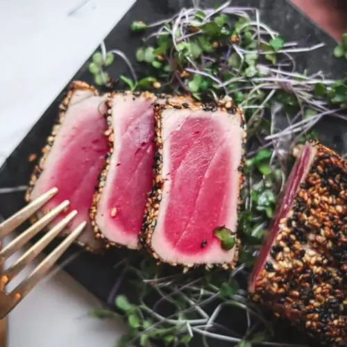

Sesame Crusted Ahi Tuna with Seared Rice Patty and Cucumber Salad
- Serves2
- Ingredients20
- Steps10

Ingredients
Ahi Tuna
- 1 block ahi tuna steak
- 2 tablespoons soy sauce
- 1 teaspoon grated fresh ginger
- 1 teaspoon minced garlic
- ⅓ cup black sesame seeds
- Kosher salt
- 1 teaspoon sugar
- 1 tablespoon Italian Seasoning
- 2 teaspoon cayenne pepper
- 1 cup steamed white rice
- 1 teaspoon rice vinegar
- 1 tablespoon sesame oil
- Thinly sliced scallion for garnish
Cucumber Salad
- 2-3 crunchy Persian or Japanese cucumbers
- ⅓ teaspoon salt
- 3 tablespoons rice vinegar
- 1 tablespoon sugar
- 1/4 teaspoon salt
- 1/4 teaspoon soy sauce
- 1 teaspoon regular sesame seeds
Directions
Make the ahi tuna and rice patty
- Combine the block of tuna, soy sauce, ginger, and garlic in a plastic bag and let marinate for 10 minutes.
- Season the cooked rice with the rice vinegar and a pinch of salt. Form into a patty and set aside.
- In a medium mixing bowl, mix together sesame seeds, Kosher salt, sugar, Italian Seasoning, and cayenne pepper. Use a spoon to mix.
- Take tuna steak out of the bag and roll it around in the sesame mixture. Only the top, bottom, and sides of tuna should be covered with sesame.
- In a small nonstick sauté pan, heat the sesame oil over medium-high heat. Sear the block of tuna, turning to equally cook on all sides, for about 1 minute per side. Remove the fish from the pan and let it rest. Add the rice patty to the pan and sear, turning to cook both sides (top and bottom), about 30 seconds each side.
Make the salad
- Slice all the cucumbers very thin and transfer to a medium sized bowl.
- Sprinkle with the ⅓ teaspoon of salt and toss with your hands to ensure even salt coverage to draw out moisture. Wait 5-10 minutes.
- Then rinse the cucumbers thoroughly to remove the salt, drain, then squeeze all the cucumbers to remove excess moisture. The goal is to remove as much water as you can. Don't be afraid to squeeze hard, the cucumbers can take it!
- Mix the rice vinegar, sugar, salt, soy sauce until dissolved, then add to cucumbers. Sprinkle with the regular sesame seeds.
- Arranging the dish: Cut the seared tuna into 3 slices and arrange them on one side of a plate, and then scatter the sliced scallion over the tuna. Place the rice patty on the other side of the plate and pile salad on top. Serve.